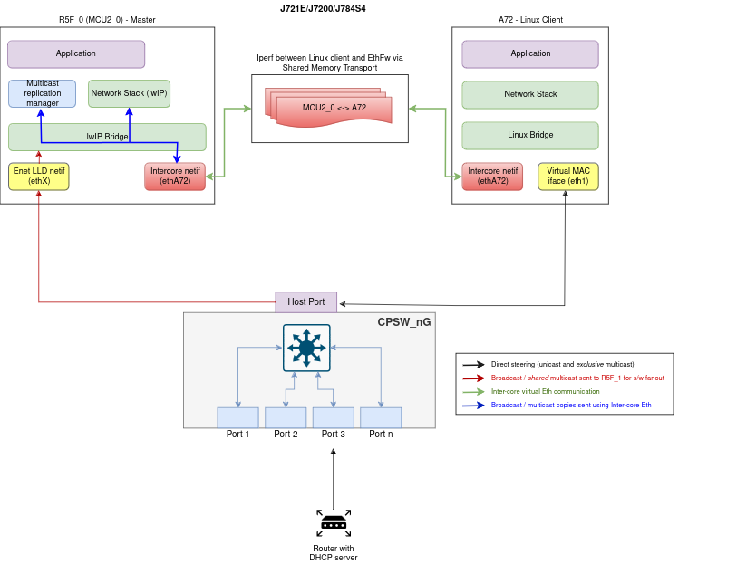
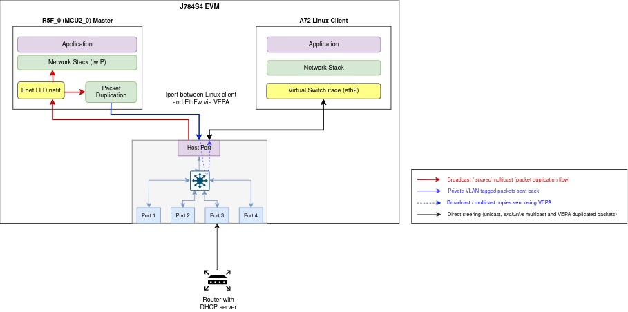

|
Ethernet Firmware Datasheet
|
|
Ethernet Firmware Datasheet
|
The Ethernet Firmware boot time measurements in the table below show the current status in the TI Processor SDK for J721E/J7200/J784S4. The test setup is:
Note: It is worth noting that the reported boot time below is not optimized.
| Function | Description |
|---|---|
| main() | Starting time is when Ethernet Firmware application is ready to run in main(). Using main() as starting point decouples these measurements from the EthFw binary loading mechanism. |
| Layer-2 switching active | Time elapsed from main() till L2 switching is active.
|
| Host port ready for RX/TX | Time elapsed from main() till host port is ready for packet transmission and reception.
|
| TCP/IP stack initialized | Time elapsed from main() till TCP/IP stack is initialized.
|
| gPTP stack initilized | Time elapsed from main() till gPTP stack is initialized.
|
| CPSW Proxy Server initialized | Time elapsed from main() till CPSW Proxy Server is initialized.
|
The time taken to reach each of the ETHFW boot stages described above is summarized in the following table.
| Boot stage | J721E | J7200 | J784S4 | J722S |
|---|---|---|---|---|
| main() | 0 ms | 0 ms | 0 ms | 0 ms |
| Layer-2 switching active | 141.80 ms | 136.10 ms | 114.85 ms | 118.23 ms |
| Host port ready for RX/TX | 43.46 ms | 54.280 ms | 29.43 ms | 26.21 ms |
| TCP/IP stack initialized | 52.620 ms | 59.140 ms | 30.64 ms | 39.18 ms |
| gPTP stack initilized | 52.910 ms | 67.340 ms | 36.67 ms | 43.80 ms |
| CPSW Proxy Server initialized | 66.430 ms | 73.490 ms | 41.35 ms | 22.31 ms |
This table doesn't take into account the time between power-on reset (POR) and the Firmware image loaded and made ready to run, as it will be bootloader dependent.
In a MAC-to-PHY scenario, the Layer-2 switching active time is heavily determined by the time taken by the Ethernet PHYs to establish a link with the remote partner. The total Layer-2 switching active time must take into account the link time corresponding to the PHY configuration being used.
Note: Boot time measurements are not done for J742S2 due to EVM limitation.
| Hardware Configuration | Value |
|---|---|
| Processing Core | R5F0 and A72 |
| Core Frequency | 1 GHz |
| Packet buffer memory | DDR |
| Hardware checksum offload | Yes |
| Scatter-gather TX | Yes |
| Scatter-gather RX | No |
| Software Configuration | Value |
|---|---|
| RTOS | FreeRTOS |
| RTOS application | EthFw applicaton |
| TCP/IP stack | lwIP 2.2.0 |
| Linux client tool version | iperf v2.0.5 |
| Test | Bandwidth (Mbps) | CPU Load (%) |
|---|---|---|
| TCP RX | 303 | 93 |
| TCP TX | 366 | 92 |
| TCP Bidirectional | RX = 160, TX = 177 | 76 |
| Test | Bandwidth (Mbps) | CPU Load (%) |
|---|---|---|
| TCP RX | 93.2 | 92 |
| TCP TX | 93.1 | 95 |
| TCP Bidirectional | RX = 81.4, TX = 24.9 | 81 |
| Test | Datagram Length = 64B | Datagram Length = 256B | Datagram Length = 512B | Datagram Length = 1470B | ||||||||
|---|---|---|---|---|---|---|---|---|---|---|---|---|
|
Bandwidth (Mbps) |
CPU Load (%) |
Packet Loss (%) |
Bandwidth (Mbps) |
CPU Load (%) |
Packet Loss (%) |
Bandwidth (Mbps) |
CPU Load (%) |
Packet Loss (%) |
Bandwidth (Mbps) |
CPU Load (%) |
Packet Loss (%) | |
| UDP RX | 0.5 | 14 | 0.00 | 1.00 | 16 | 0.00 | 2.0 | 16 | 0.00 | 5.00 | 18 | 0.00 |
| 1 | 19 | 0.18 | 2.00 | 21 | 0.00 | 4.00 | 22 | 0.00 | 8.00 | 21 | 0.00 | |
| 2 | 21 | 0.62 | 10.00 | 24 | 0.00 | |||||||
| UDP RX (Max) | 3.5 | 22 | 0.88 | 9 | 22 | 0.68 | 20 | 23 | 0.71 | 100 | 26 | 0.57 |
| UDP TX (Max) | 15.5 | 90 | 0.0038 | 40 | 82 | 0.01 | 80 | 78 | 0.003 | 231 | 80 | 0.0023 |
Inter-core network interface allows EthFw to communicate with another core using standard TCP/IP protocol suite. Tap user-space application serves as a medium to facilitate the exchange of Ethernet frames between the A72 Linux and R5_0 (MCU2_0) master core.

| Test | Bandwidth (Mbps) | CPU Load (%) |
|---|---|---|
| TCP RX | 12.7 | 28 |
| TCP TX | 13.4 | 24 |
| TCP Bidirectional | RX = 5.71, TX= 6.29 | 34 |
| Test | Datagram Length = 64B | Datagram Length = 256B | Datagram Length = 512B | Datagram Length = 1470B | ||||||||
|---|---|---|---|---|---|---|---|---|---|---|---|---|
|
Bandwidth (Mbps) |
CPU Load (%) |
Packet Loss (%) |
Bandwidth (Mbps) |
CPU Load (%) |
Packet Loss (%) |
Bandwidth (Mbps) |
CPU Load (%) |
Packet Loss (%) |
Bandwidth (Mbps) |
CPU Load (%) |
Packet Loss (%) | |
| UDP RX | 1 | 27 | 0.00 | 5 | 25 | 0.00 | 10.0 | 30 | 0.00 | 10 | 24 | 0.00 |
| 3 | 31 | 0.00 | 10 | 34 | 0.00 | 15.00 | 35 | 0.00 | 20 | 31 | 0.00 | |
| 5 | 40 | 0.037 | 15 | 40 | 0 | 20 | 31 | 0 | 30 | 36 | 0.00 | |
| UDP RX (Max) | 10 | 44 | 0.44 | 25 | 52 | 0.16 | 40 | 54 | 0.73 | 50 | 45 | 0.57 |
| UDP TX (Max) | 0.5 | 46 | 0.01 | 2 | 51 | 0 | 4 | 56 | 0.01 | 10 | 47 | 0 |
EthFw provides support to enable VEPA (Virtual Ethernet Port Aggregator) functionality with CPSW capable of multihost data flow. Multihost is a CPSW ALE feature that enables packets to be sent and received on host port.
VEPA or hairpin mode allows the traffic to return to the same port (host port in this case) at which it ingressed on. It enables to forward packets directly to clients via host port increasing intercore virtual ethernet communication performance.

| Test | Bandwidth (Mbps) | CPU Load (%) |
|---|---|---|
| TCP RX | 245 | 95 |
| TCP TX | 249 | 93 |
| TCP Bidirectional | RX=92, TX=112 | 74 |
| Test | Datagram Length = 64B | Datagram Length = 256B | Datagram Length = 512B | Datagram Length = 1470B | ||||||||
|---|---|---|---|---|---|---|---|---|---|---|---|---|
|
Bandwidth (Mbps) |
CPU Load (%) |
Packet Loss (%) |
Bandwidth (Mbps) |
CPU Load (%) |
Packet Loss (%) |
Bandwidth (Mbps) |
CPU Load (%) |
Packet Loss (%) |
Bandwidth (Mbps) |
CPU Load (%) |
Packet Loss (%) | |
| UDP RX | 5.02 | 27 | 0.00 | 25.5 | 32 | 0.00 | 25.5 | 24 | 0.00 | 25.5 | 16 | 0.00 |
| 10.0 | 46 | 0.00 | 51.2 | 74 | 0.056 | 51.2 | 37 | 0.004 | 51.2 | 26 | 0.00 | |
| 15.0 | 90 | 0.082 | 102 | 82 | 0.045 | 112 | 46 | 0.00 | ||||
| UDP RX (Max) | 20.5 | 91 | 0.75 | 70.6 | 85 | 0.82 | 120 | 85 | 0.21 | 203 | 91 | 0.10 |
| UDP TX (Max) | 30.1 | 100 | 0.003 | 101 | 100 | 0.02 | 174 | 100 | 0.001 | 339 | 100 | 0.001 |
Note: VEPA intercore performance numbers for J742S2 are not published in this release. Will come in later releases.
| Revision | Date | Author | Description | Status -----— |
|---|---|---|---|---|
| 1.1 | 28 Nov 2023 | Misael Lopez | Added SDK 9.1 results | Approved |
| 1.2 | 25 Mar 2024 | Misael Lopez | Added SDK 9.2 results | Approved |
| 1.3 | 26 Jul 2024 | Vaibhav Jindal | Added SDK 10.0 results | Approved |
 1.8.14
1.8.14